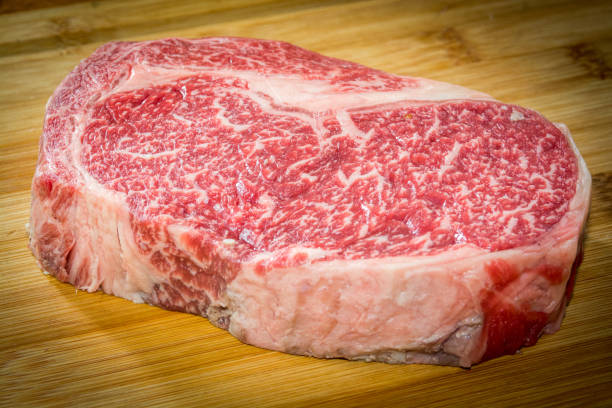
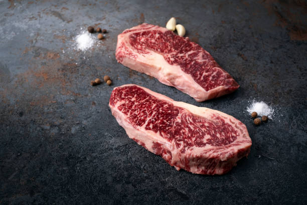
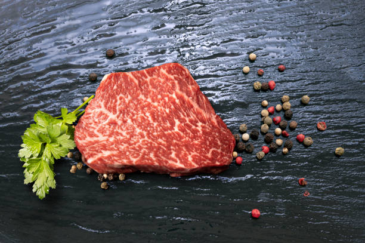
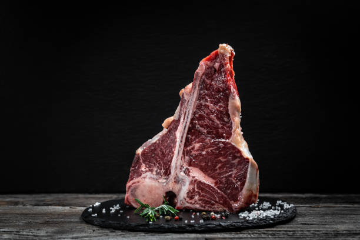
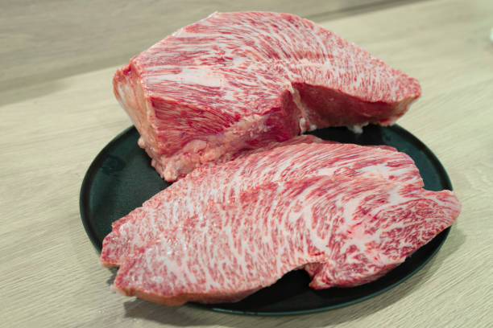
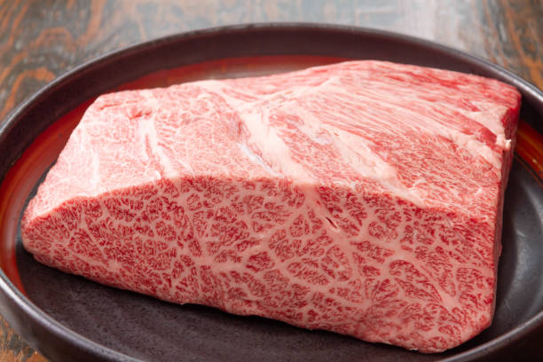
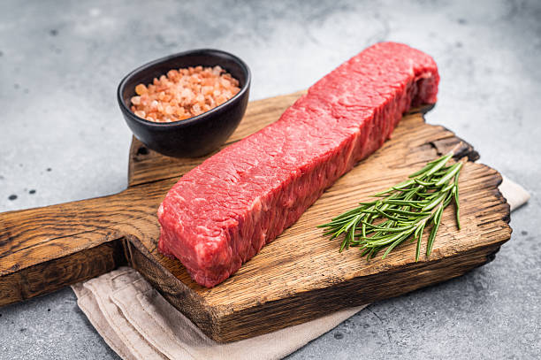

Utah Wagyu Beef Options
Choose the perfect size for your family
Pasture to plate, The Rocky Mountain Way
Three Simple Choices
We offer whole, half, and quarter beef to fit your family's needs. Every option is raised for 2.5 years in Utah's Rocky Mountains—no hormones, no antibiotics, just exceptional beef. You'll pick up your beef from our family farm and arrange processing with your preferred butcher, or we can coordinate butchering and delivery for an additional fee.

Whole Beef
The complete animal with maximum variety and best value per pound. Perfect for large families or splitting between households. You arrange processing, or we can coordinate it for you.
Learn More
Half Beef
Our most popular option. A balanced selection of cuts that's ideal for families of 4-6. You choose your butcher, or we can arrange processing and packaging.
Learn More
Quarter Beef
A great introduction to premium Wagyu beef without the commitment of larger quantities. Fits easily in a standard freezer. Take to your butcher or we'll handle it.
Learn MoreWhat You'll Receive
When you purchase whole, half, or quarter beef from our Utah farm, your butcher will process it into a variety of premium cuts like these. Our Wagyu beef features exceptional marbling throughout—this intramuscular fat creates the signature buttery texture and rich flavor that makes American Wagyu world-renowned.







Processing & Delivery Options
We want you to have control over how your Utah Wagyu beef is processed and delivered. Here are your options:
Standard Pickup
Purchase your whole, half, or quarter beef and pick it up directly from our Utah farm. You then take it to your preferred butcher for processing and packaging.
Best for: Customers who have an established relationship with a local butcher or want to choose their own processor
We Arrange Butchering
We'll coordinate processing with our trusted local butcher. Choose between vacuum-sealed packaging or traditional butcher paper wrapping.
Includes: Professional cutting to your specifications, vacuum sealing or butcher paper, freezing
Additional processing fee applies — contact for current rates
Delivery Service
We can deliver your Utah Wagyu beef directly to your butcher of choice, saving you the trip and ensuring proper transport.
Best for: Customers who need delivery to their preferred processor
Delivery fee based on distance — contact for quote
Questions About Processing?
Contact us at 402-217-5291 or 801-301-3850 to discuss processing options, get current pricing and fee estimates, and learn about our recommended butcher's services. We're happy to explain the entire process and help you choose the best option for your Utah Wagyu beef.
Whole Utah Wagyu Beef
The complete package with maximum value
What You're Purchasing
You're purchasing a whole live animal (or hanging weight) from our Utah family farm. After processing by your butcher, this typically yields approximately 400–600 pounds of packaged beef, depending on the animal size and how it's cut. Each animal is raised for 2.5 years to ensure optimal marbling and flavor. The final variety of cuts depends on your cutting instructions to the butcher.
Complete Variety
Work with your butcher to get premium steaks, tender roasts, versatile ground beef, and specialty cuts
Best Value
Lowest price per pound when comparing purchase price to final packaged weight
Fully Customizable
Specify steak thickness, roast sizes, ground beef package weights, and special requests
Year's Supply
Enough beef to feed a large family or multiple households for 8–12 months
Pricing & Processing
Beef Price: Contact our Utah family farm for current pricing
Processing Fee: Additional fee applies (contact for estimate)
Delivery Fee: Based on distance (if applicable)
The purchase price covers the animal itself. Processing fees are separate and paid directly to the butcher (if you use our butcher) or to your chosen processor. Call us at 402-217-5291 or 801-301-3850 for current rates.
Ideal For
Large families wanting to stock up for the year, multiple households pooling together to split the cost and beef, or anyone serious about knowing exactly where their meat comes from. You'll need approximately 16–20 cubic feet of freezer space for the final packaged product. Contact us to learn more about whole beef options.
Half Utah Wagyu Beef
The perfect balance for most families
What You're Purchasing
You're purchasing half of an animal (or half of the hanging weight) from our Utah farm. After processing by your butcher, this typically yields approximately 200–300 pounds of packaged beef. This gives you a well-balanced mix of all major cut types—perfect for feeding a family of 4–6 for several months.
Balanced Selection
A natural mix of premium steaks for special dinners and everyday cuts for weekly meals
Most Popular
The sweet spot between variety, value, and freezer space for most families
Flexible Cutting
Customize how your beef is cut and packaged to match your cooking preferences
Manageable Size
Substantial quantity without overwhelming your freezer or budget
Pricing & Processing
Beef Price: Contact our Utah Wagyu farm for current pricing
Processing Fee: Additional fee applies (contact for estimate)
Delivery Fee: Based on distance (if applicable)
The purchase price covers your half of the animal. Processing is separate—either arranged through us for an additional fee, or you can use your own butcher. Email us at rockymtnwagyu@gmail.com for details.
Ideal For
Families of 4–6 who want premium Wagyu beef regularly but don't need an entire year's supply. Also great for two smaller households to split. You'll need approximately 8–10 cubic feet of freezer space for the final packaged product.
Quarter Utah Wagyu Beef
A great way to experience our quality
What You're Purchasing
You're purchasing a quarter animal (or quarter of the hanging weight) from our Utah family farm. After processing by your butcher, this typically yields approximately 100–150 pounds of packaged beef. You'll get a good variety of cuts, though with less customization flexibility than larger orders since you're working with a smaller portion. This is perfect for experiencing our American Wagyu beef without a huge commitment.
Good Variety
Selection of steaks, roasts, and ground beef to try different preparations
Smaller Investment
Experience our quality without the financial or space commitment of larger options
Easy Storage
Fits comfortably in a standard chest freezer with room to spare
Same Standards
Raised with our full 2.5-year process—same care, same quality
Pricing & Processing
Beef Price: Contact us for current pricing
Processing Fee: Additional fee applies (contact for estimate)
Delivery Fee: Based on distance (if applicable)
The purchase price covers your quarter of the animal. Processing is separate—either arranged through us for an additional fee, or you can use your own butcher.
Ideal For
Smaller households, couples, or first-time bulk beef buyers wanting to experience our quality. Also great if you're curious about the difference Wagyu beef makes but aren't ready for larger quantities. You'll need approximately 4–5 cubic feet of freezer space for the final packaged product.
Pre-Sale Program
Reserve beef from our next generation of Utah-raised calves
How It Works
Our pre-sale program lets you reserve beef from calves currently being raised on our Utah farm. Each calf requires 2.5 years from birth to reach optimal quality and weight for processing. During this time, they receive the same care and attention that makes our beef exceptional.
Lock In Pricing
Secure today's prices for future delivery, protecting you from market increases
Payment Plans
Spread payments over time with flexible monthly options
Track Your Calf
Receive periodic updates on your calf's growth and development
Guaranteed Quality
Your calf receives our full 2.5-year raising process with no shortcuts
Program Terms
Our pre-sale program includes specific terms regarding animal loss, natural weight variations, refund policies, and timing guarantees. These protections ensure fairness for both you and our family farm throughout the 2.5-year raising period.
Contact us at 402-217-5291 to discuss pre-sale options, learn about current availability, and explore payment plan details for your Utah Wagyu beef.
Perfect For
Customers who want to secure premium Utah Wagyu beef at today's prices for future delivery. Great for those planning ahead, wanting to spread payments over time, or interested in following their calf's journey from birth to harvest. Contact us to learn more about our pre-sale program.
Ready to Order Your Utah Wagyu Beef?
Get in touch to check availability, discuss which option fits your needs, and reserve your beef from our Utah family farm. We're here to answer questions and help you make the best choice for your family.
Contact Us to OrderCall or text: 402-217-5291 | 801-301-3850 | rockymtnwagyu@gmail.com